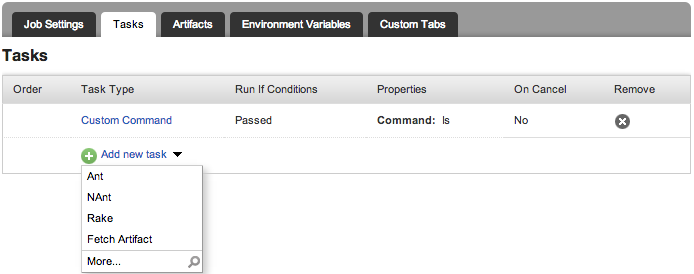
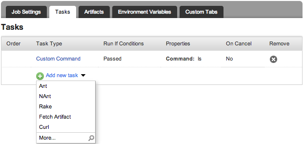

Today we released GoCD 14.1.
New Feature
Create your own task plugins for GoCD.
GoCD supports configuring a few kinds of tasks (Nant, Ant and Rake), directly, from the configuration UI, without specifying them as a custom command. For instance, if you go to the configuration UI for a job, you'll see something like this:

A task plugin allows you to extend this so that you can have other tasks available here. The plugin also allows you to control the UI, as well as the data stored for this task.
For instance, you can find the source of a sample Curl plugin in GoCD's updated help documents. Assuming you have the plugin installed, you'll see that the dropdown in the job configuration UI has changed to look like this:

Source Code Updates
The way that GoCD is built and tested has been updated to make it easier for people to contribute.
Bug Fixes
- Fixed a corner case issue around job reschedule. (link)
- Fixed issue where SVN post-commit hook was not passing along credentials. (link)
- Fixed issue with adding users via UI with a . (dot) in the username. (link)
- GoCD Agent handles UnknownHostException by substituting host name with a generated name. (link)
- Task running executables in the working directory should now be prefixed with ./ (link)